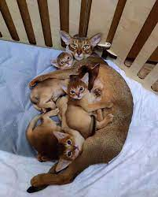

GATO ABISINO

El origen del nombre de raza no tiene que ver con el lugar original donde
esta se desarrolló, la cual se cree que fue Egipto, sino por el hecho de que el
primer "Abisinio" exhibido en una exposición en Inglaterra se trajo con la información de
haber sido importado desde ese país, Abisinia (hoy Etiopía). En el libro “Cats, Their
Points”, escrito por Gordon Staples y publicado en 1874, se encuentra la primera mención
sobre un Abisinio. El libro muestra un dibujo de un gato con una capa moteada y ausencia de
rayas en las patas, rostro y cuello. Según describe el libro, este gato llamado “Zulu
” era propiedad de la Sra. Barrett-Lennard y había llegado a Inglaterra en 1868 con una
expedición militar desde Abisinia.2? Debido a la poca fundamentación en informes escritos
esta teoría es poco aceptada entre los criadores ingleses, que prefieren inclinarse por la
opinión que la raza fue realmente creada entre cruces de varios silvers and browns tabbies
con los nativos gatos tickeados de Inglaterra conocidos como “British Bunny”.